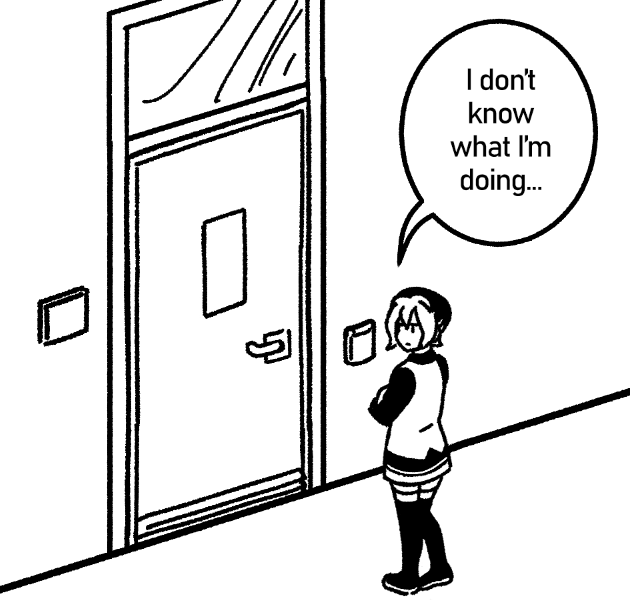
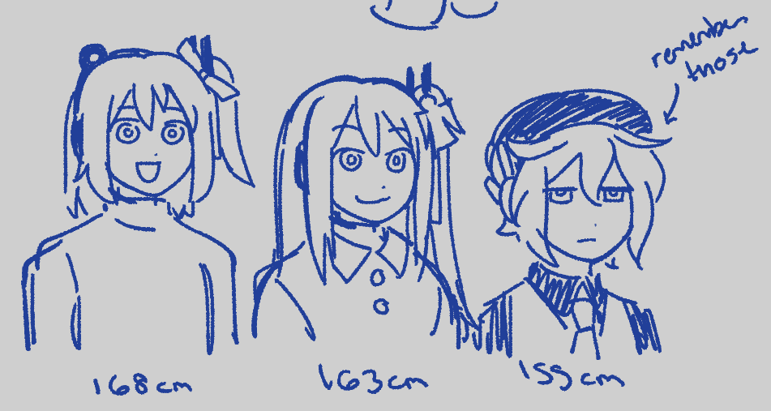
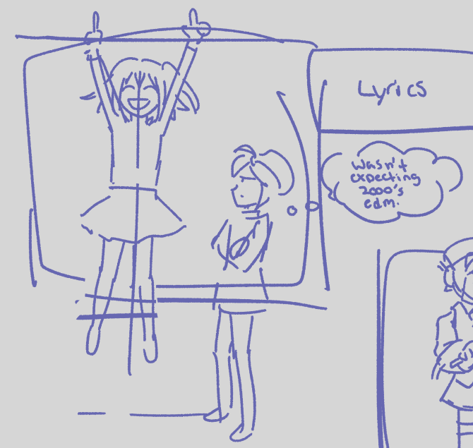

From 0 to You, a fanbook made to celebrate the first anniversary of the completion of Adachi Rei's robot, released today. View it for free here: Itch.io || BOOTH
I had the honor of working on the cover alongside Yan, Kirya, Kilstur, Eletenshi, and Puzzlepig. We all depicted Rei as a curious girl with eyes full of wonder.
I could have left my contribution at that or added the usual illustration. But I didn't have any projects lined up through November, so I decided to take a gamble on making my first long-form comic. I think the zine's open-ended prompt allowed my mind to wander towards such an extreme.
While brainstorming for my piece, I couldn't stop thinking about this video by Cactus Malpractice where, in place of a regular album review for Crazy Hits (2005), he held a Crazy Frog-themed rave to record his friends' reactions to the album. A rave held in a bedroom. Images of Crazy Frog on printer paper taped to the walls. It struck me as something Adachi Rei would think is novel and a good idea. That led me to wonder who she would subject such a thing to and Defoko was the most fitting choice to me: a gloomy person who acts too "cool" for things. Mascot personality?
How do you embody the thoughts and actions of mascots that don't have real personalities? Well... fanon, but also individual interpretations of the characters. I feel across the board, vocal synth characters are depicted with quirky oddball personalities that operate in extremes. From there they're grouped by engine, color, spoken language, famous song associations... fandom stuff that generates more ideas. Rei is often grouped with the big 3 UTAUS, Teto, Momo, and Defoko.
I usually see Rei with a strange but curious and cheerful kinda personality, sometimes smug, sometimes melancholic and dissassociative. The first one feels fitting for an artificial robot character in a setting/cast where that's uncommon. Defoko has more history as the first public UTAU, so her associations with artificiality, age, and stubbornness are stronger to me. She is a rather quiet force in the video making world. You'll hear her in TTS and commentary videos to this day. Probably to her chagrin. Shion's kinda fair game since she's so new. She was just born and is 6 apples tall. Her :3 face is easy to interpret as mischievous.

To ground the setting and make it a little meta, Rei lives at Nihon University, the real university missile_39 studied at. missile is(?) a graduate student there and uses their Funabushi campus spaces to work on robots; he mentions and photographs its interiors on his Twitter account. That trivia is an adequate springboard to create a generic university setting, but I wanted to see just how specific I could get with the location on public information. With missile's major in mind (Graduate School of Science and Technology, Major in Precision Mechanical Engineering), I scoured public Funabushi campus tour videos (https://www.cst.nihon-u.ac.jp/campus/funabashi/) and compared websites per department. Nihon University's site ecosystem is difficult to follow. Anyway, missile's old Hatsune Miku robot is featured on his department's page for the Laboratory of Intelligent Robotics (https://www.cst.nihon-u.ac.jp/campus/funabashi/), which depicts small interiors. Most of the Funabushi buildings house specialized equipment and their open spaces are for testing. For the story, we need a building with many rooms and some communal space, but not so much that Rei's presence would be disruptive. Hmm... thinking... on a string of educated guesses, I narrowed it down to Techno Space 15, the CST Library, and the Research Center for Micro-functional Devices. From there, I decided the Center was too small and had an unclear connection to robotics research, and the Library was too open for Rei. This exercise seems pointless because its depiction is limited to a few rooms in the comic, but it helped visualize the world the girls live in, how Defoko would travel to see Rei (the Funabshi station line), and what doors would be installed in and out of the building.
I imagined Rei gained noteriety outside of the university and was provided some barebones living space for her troubles. Probably some storage closet the length of a bed. Her room is in the imagined basement of Techno Space 15. She's free to roam and leave the campus but is still school property, so the faculty must monitor her well. Imagine if your singing robot accidentally walked into oncoming traffic due to her misunderstanding pedestrian crossing. What a PR nightmare.
For music being so integral to these characters, I wasn't sure I wanted to use vocal synth music. It felt too on the nose and I couldn't imagine the girls gleefully dancing to their own voices. Maybe Rei could, but definitely not Defoko. I asked a friend for suggestions and she gave me 2000's EDM, happy hardcore, and some DDR Extreme songs, just off the top of her head. One of the songs was Dj Satomi's remix of "Sound of my Dream," originally by Clubringer, and I felt its lyrics were relevant to Rei's feelings. I decided to use it as the title as the last step in the entire comic process. Like, I slept on it before the deadline to be sure I wouldn't regret the choice.
My draft included a thought bubble where Defoko expressed surprise at Shion's old taste, but I cut back on thought bubbles for all but one panel at the end. It is a short comic and focusing on the characters' external actions felt more important.

Why is Shion trapped in the VTuber dimension? It's accurate to real life: Rei has a robot body, Shion does not. As of this blog, Shion's vocal is in development and a robot in her likeness is far down the line. She has a design and a legible voice, and that's more than enough for fanworks to depict a character as alive as everyone else. Her direct control of a computer also lent well to her being the DJ at the party.
Rei, Shion, and Defoko all appear to call and message each other without phones. I probably could have done better at conveying this, but, as robots, they are all able to visualize calling and messaging applications like a UI in front of them. They have receivers in their earpieces to make these work.
When Rei and Defoko appear as their younger selves, Defoko has long hair and a slightly different outfit. It's based on her earliest design made in K.HMix's Character Maker (https://khmix.sakura.ne.jp/download.shtml).
(https://utaneuta.utau-synth.com/history.html) I had never seen it before researching for this.
I never used any of CLIP's comic tools before this and I have to say, even on PRO Version 1, it's good. (Or my expectations are just that low...) The margin rulers are easy to work with and the balloon tool is super convenient. It's still dogshit for typesetting so I went back and forth with the files in Photoshop for that. I only neglected the Frame Border tool and instead manually lined up rectangles for panels, carefully matching up the gaps for panel layouts on all pages. It took little time but there's probably more efficient ways to panel.
I'm not confident in comic making or storytelling, but talking myself out of it ad nauseum wasn't going to change anything. Comics are a medium I dreamed of working in but failed to see through: "My ideas don't work," "I worry I don't have the time," "this is boring," the usual self-conscious excuses. That made more sense when I was in college, but nowadays I'm free to research as I please, for better or worse. While a deadline was crucial to this working, I will work harder on self-discipline for comic work in the future.
I started to study comic structure more closely last year and read Drawing Words and Writing Pictures by Jessica Abel and Matt Madden, which had many great insights and exercises. It's a course in book format, I reccommend it. I was also privy to typesetting and how text in bubbles flow from QCing manga chapters a long time ago. Don't think I was a good quality checker.
Lastly I want to thank Yan, Kalin, and everyone on the zine for bringing their A-game. I'm super amazed and impressed by what we created together.
Back...